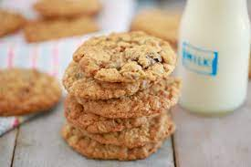

Move over raisins! Peanut butter is coming to the oatmeal cookie party. Whip up these easy chewy oatmeal cookies any day of the week.
I had a revelation: oatmeal and peanut butter are a match made in dessert heaven. Each alone makes a wonderful cookie, but together they are the perfect duet! Like, cue cookie angels singing with a harp good.
Bring them to a friend’s house, put them on a cookie tray or keep them in a cookie jar for those need-a-cookie moments.